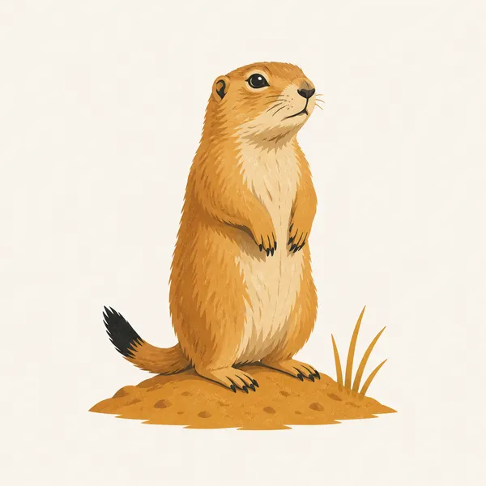
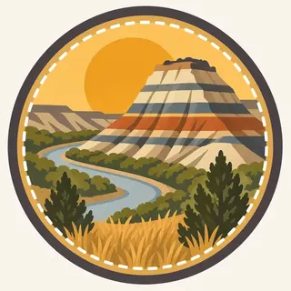

01
The South and North Units
Separated by roughly 70 miles, the South Unit (46,158.57 acres) and North Unit (24,070.32 acres) both cut through Little Missouri River badlands, banded in red, gold, and gray layers.
TrailMark Archive Edition
North Dakota | Little Missouri Badlands
A memorial park on April 25, 1947. Theodore Roosevelt National Park on November 10, 1978, over the badlands that shaped his conservation views.
Archive No. TM-THRO-059
National Park since 1978
Collection North Dakota Badlands
Park Overview
Theodore Roosevelt National Memorial Park was established April 25, 1947. Congress redesignated it Theodore Roosevelt National Park on November 10, 1978, after earlier years as a Recreation Demonstration Area and a National Wildlife Refuge.
The park's own statistics page gives three units totaling 70,446.89 acres: the South Unit at 46,158.57 acres, the North Unit at 24,070.32 acres, and the small Elkhorn Ranch Unit at 218 acres, with 29,920 acres designated wilderness.
Roosevelt ranched in this badlands country in the 1880s, at the Maltese Cross and Elkhorn ranches, both preserved within today's park boundaries; he later credited the experience with shaping the conservation policies of his presidency.
Emotional Thesis
The header painting sets a banded butte over the Little Missouri River's curve, prairie grass filling the foreground under a wide gold sky. That striped, layered rock is the park's defining texture, and the river it stands beside is the same one Roosevelt's cattle once grazed along.
Roosevelt came to Dakota Territory in the 1880s cattle boom and ranched at Maltese Cross and later Elkhorn Ranch. The badlands experience is widely credited, including by the park's own materials, with shaping the conservation ethic that defined much of his presidency.
Landscape Highlights
01
Separated by roughly 70 miles, the South Unit (46,158.57 acres) and North Unit (24,070.32 acres) both cut through Little Missouri River badlands, banded in red, gold, and gray layers.
02
At just 218 acres, the smallest of the park's three units preserves the site of Roosevelt's Elkhorn Ranch, reached by a remote gravel road rather than the main park entrances.
03
The first bison release came in December 1956, 29 animals from Fort Niobrara National Wildlife Refuge in Nebraska; the North Unit received its own herd, 20 animals from the South Unit, in November 1962.
Wildlife
Black-tailed prairie dogs live in colonies across the park's grasslands, a keystone species whose burrows and grazing shape the surrounding prairie ecosystem. The extra drawing, a prairie dog on its mound, is the archive's image of that colony life.

01
Bison, reintroduced in 1956 and 1962, and feral horses, managed without a fixed population target, are both large-herbivore stories unique to this park among the badlands units.
02
Prairie dog towns support other species, including badgers and raptors that hunt around the colonies.
03
Wild horse management uses immuno-contraception (GonaCon) alongside periodic gathers, an approach distinct from simple population caps.
Geology
The Little Missouri River cuts through sedimentary layers across both the North and South Units, exposing the banded rock that gives the badlands their striped, eroded appearance.
01
The South and North Units, though administratively one park, sit roughly 70 miles apart along the same river system, each showing a somewhat different badlands character.
02
Erosion continues actively shaping the buttes and draws visible from park overlooks, the same weathering process that carved the landscape Roosevelt knew.
03
No page opened for this essay states a specific age in years for these rock layers; none is given as a precise figure.
Hot, exposed conditions across the badlands; early morning is the best time for wildlife viewing and hiking.
Cooler temperatures and active bison and horse movement make this a favored season for wildlife photography.
Harsh, exposed winters with limited services; both units remain open but require serious preparation.
The Little Missouri can run high with snowmelt; prairie wildflowers and new bison calves both appear this season.
Photography
A banded badlands butte alone could be South Dakota or Nevada. The Little Missouri River bending beneath it is what ties the image specifically to this park.
01
Low-angle light makes the layered red, gold, and gray bands in the buttes far more legible than midday sun.
02
Bison and wild horses are genuinely wild animals here; a long lens, not a close approach, is the correct tool.
03
These badlands are geologically and administratively distinct from Badlands National Park in South Dakota; keep the Little Missouri's cottonwood-lined banks in frame to place this specific park.
Field Notes
He came here to ranch cattle and left with the conservation instincts that later protected land he never saw again.
TrailMark Field Notes

Badge Story
The badge fails if it is indistinguishable from South Dakota's Badlands. A visible river bend beside the banded rock is what claims this specific park.
Warm gold sky against layered rust and cream rock bands.
A visible curve of the Little Missouri River at the base.
No bison silhouette on the mark itself; that story belongs to the wildlife section.
Archive No.059
LocationLittle Missouri Badlands
ReleaseBadlands Ranch Mark
Stewardship / Safety
Bison and feral horses here are genuinely wild and unpredictable; the badlands terrain itself is loose and prone to erosion off established trails.
Keep well back from bison and horses; both are large, wild animals capable of sudden, fast movement.
Stay on trail on badlands slopes; the exposed clay and sediment erode quickly and are easily damaged off-trail.
The North and South Units are about 70 miles apart by road; plan travel time between them rather than assuming a quick transfer.
Summer heat and winter cold are both severe on the exposed prairie; carry adequate water or cold-weather gear for the season.
Current conditions, fees, and alerts are on the National Park Service site.
Continue the Archive
Badlands National Park in South Dakota is a different, geologically distinct formation despite the shared name. Wind Cave, in this batch, is the other South Dakota prairie park, with bison and prairie dogs of its own above a very different world underground.